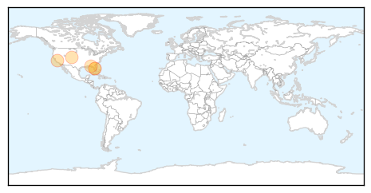
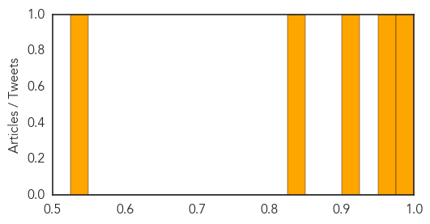
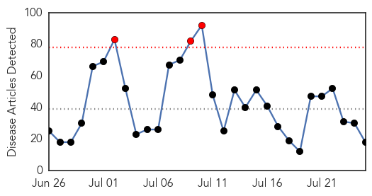

West Nile Virus
30-Day Web Trend
8 alerts, 2 warnings

30-Day Twitter Trend
0 alerts, 0 warnings

Article Locations
Article Confidences
Top Articles:
- 0.977
- FLORIDA confirms 9 human cases of LEPROSY so far this year ~ New study suggests CHRONIC WASTING DISEASE may be transmissible to HUMANS ~ WYOMING confirms three cases of TULAREMIA ~ Officials confirm f
- 0.962
- West Nile in Nashville mosquito pool but not in Knox
- 0.905
- Colorado Horse Diagnosed With West Nile Virus
- 0.846
- Human Case of West Nile Virus Confirmed in Walton County
- 0.547
- Bay County Health Dept. Warns Residents to Protect Themselves Against Mosquitoes
Top Tweets:
-
No tweets found for Jul 25, 2015
Ebola
30-Day Web Trend
3 alerts, 0 warnings

30-Day Twitter Trend
2 alerts, 0 warnings

Article Locations

Article Confidences

Top Articles:
- 1.000
- Nigerian News from Leadership News
- 1.000
- Sierra Leone records new cases of Ebola
- 0.999
- Despite rumors, unlikely Ebola would come to Fiji, says WHO
- 0.990
- Rising Sun
- 0.976
- Samaritan's Purse Doctor Infected With Ebola Is in Good Spirits in Georgia Hospital; Grateful for Prayers
- 0.948
- How Labaran Maku's Careless Comment Encouraged Ebola Infected Patrick Sawyer to Visit Nigeria
- 0.939
- A New Focus for Global Health
- 0.890
- Sierra Leone launches Ebola recovery plan
- 0.887
- Sierra Leone launches Ebola recovery plan - Xinhua
- 0.858
- Joy, tears: Nancy Writebol talks about her journey on anniversar
- 0.830
- State Sanitary Service of Ukraine joins EU programs on disease prevention and control
- 0.819
- Work of the Liberian Peace Corps
- 0.811
- Illness On Board Of Liberian-Flagged Ship Is Malaria Not Ebola - CDC Confirms
- 0.774
- YUMKELLA IN MANCHESTER JULY 2015 1
- 0.767
- Welcome to the Expotimes News
- 0.667
- PRESIDENT KOROMA LAUNCHES POST – EBOLA RECOVERY PROGRAMME
- 0.604
- Sierra Leone Called to the OGP Global Steering Committee
- 0.587
- One year after Ebola diagnosis, Nancy Writebol continues to work
Top Tweets:
- 0.985
- Jour 2 : Résidence Africa Stop Ebola, bluezone de Kaloum Les ateliers de la résidence Africa Stop Ebola se font... http://t.co/D1fDTpeRTJ
- 0.953
- Nurse back from third trip to Ebola-hit Sierra Leone: 'I can't imagine turning ... - ITV News http://t.co/QSJErEoLJh ebola EVD
- 0.746
- One year after Ebola diagnosis, Nancy Writebol continues to work - WBTV 3 News ... - WBTV http://t.co/o9Pb6Ub3o1 ebola EVD
- 0.735
- 'Olive ebola' withers Europe's olive grove crops and pushes prices up | Daily ... - Daily Mail http://t.co/gh5b3oXVO4 ebola EVD
- 0.694
- Ebola Scan for Jul 24, 2015 | CIDRAP - CIDRAP http://t.co/taTUFifPDt ebola EVD
- 0.665
- Nurse back from third trip to Ebola-hit Sierra Leone: 'I can't imagine turning ... - ITV News http://t.co/nLmf1YH9vc
- 0.656
- 'Olive ebola' pushes oil prices through the roof with disease and drought ... - Daily Mail http://t.co/BqQ8RjtvLl ebola EVD
- 0.587
- RT: HappeningNow WHO Bruce Aylward visits Freetown Children's Hospital for firsthand update on Ebola Infection Control h…